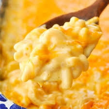

Tasty Ooey Gooey Mac and Cheesey

If you don't like mac and cheese then just leave , and leave quickly
Nothing makes me more happy in this world than eating the perfection that is creamy mac and cheese. This mouth watering recipe will make you the talk of the town. Its so good you might just have to eat the entire 1 lb box of pasta to yourself, in one sitting. Don't worry, I won't judge!
Ingredients to Obtain
- 1 lb Macaroni Noodles
- Yellow Onion
- Heavy Cream
- Block Extra Sharp Cheddar Cheese
Cooking Steps
- Grab a pot and boil your macaroni noodles
- While noodles are cooking saute the onion
- When the noodles are done drain the noodles
- Shred the entire block of extra sharp cheddar
- Add a cup a heavy cream to the onion
- Add the shredded cheese to the cream/onion
- Mix until a creamy consistency
- Serve!